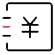

<!--页面复用性比较强的抽离成模块组件，其余的直接在页面组件中写-->
<!--选择框-->
<div class="select">
  <div class="select-item">
    <p class="select-item-p">2019年08月</p>
    
  </div>
  <div class="select-item">
    <p class="select-item-p">全部账户</p>
    
  </div>
</div>
<!--卡片-->
<div class="card">
  <app-card></app-card>
</div>
<!--选项菜单，虽然是个模块但应该没有复用性，不抽离-->
<div class="menu">
  <div>
    
    <p>收支分析</p>
  </div>
  <div>
    
    <p>月度账单</p>
  </div>
  <div>
    
    <p>我的账本</p>
  </div>
  <div>
    
    <p>查找交易</p>
  </div>
</div>
<!--消费列表-->
<!--关于把消费日期的近两天转换为今天昨天，前后端都可处理，假设后端已经处理过了-->
<div class="consume-item">
  <div class="title">今天</div>
  <app-consume-item></app-consume-item>
</div>
<div class="consume-item">
  <div class="title">明天</div>
  <app-consume-item></app-consume-item>
  <app-consume-item></app-consume-item>
</div>
<div class="consume-item">
  <div class="title">今天</div>
  <app-consume-item></app-consume-item>
</div>
<!--记一笔，功能太单一，不抽离-->
<div class="note">
  记一笔
</div>

<style>
  .select{
    width: calc(100% - 30px);
    padding: 0 15px;
    height: 48px;
    background-color: white;
    font-size:14px;
    color: #3b393c;
    display: flex;
    flex-direction: row;
    justify-content: space-between;
  }
  .select-item{
    display: flex;
    flex-direction: row;
    align-items: center;
  }
  .select-item-icon{
    width: 10px;
    height: 10px;
    margin-left: 10px;
  }
  .card{
    width: calc(100% - 30px);
    padding: 15px;
    background-color: white;
  }
  .menu{
    display: flex;
    flex-direction: row;
    padding: 0 15px 20px 15px;
    width: calc(100% - 30px);
    font-size:13px;
    color: #3b393c;
    background-color: white;
  }
  .menu div{
    display: flex;
    flex-direction: column;
    width: 25%;
    justify-content: center;
    align-items: center;
  }
  .menu div img{
    width: 28px;
    height: 28px;
    margin-bottom: 10px;
  }
  .title{
    margin-left: 15px;
    font-size:14px;
    color: #3b393c;
    height: 34px;
    line-height: 34px;
  }
  .note{
    width: 98px;
    height: 44px;
    border-radius: 22px;
    background-color: #65677e;
    color: white;
    font-size: 14px;
    line-height: 44px;
    text-align: center;
    position: fixed;
    bottom: 30px;
    right: 15px;
    /*透明度和阴影*/
    box-shadow: 0 3px 6px #65677e;
    opacity: 0.9;
  }
</style>
